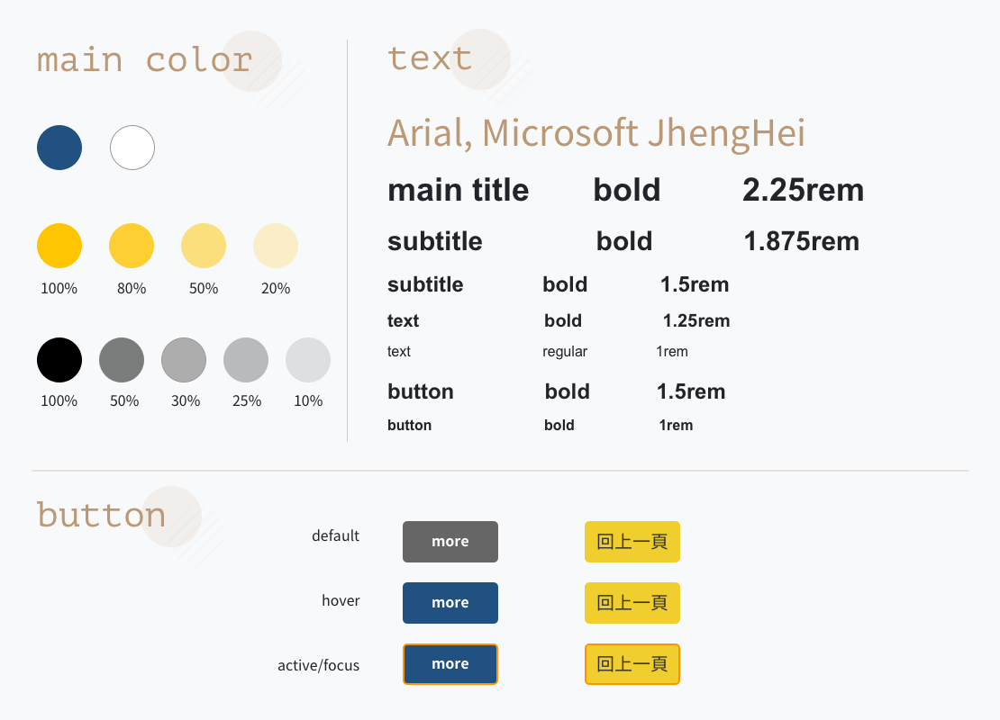

動植物防疫檢疫局 Bureau of Animal and Plant Health Inspection and Quarantine
政府機關入口網站
00. Sumnary 概述
行政院農業委員會動植物防疫檢疫局為行政院農業委員會的附屬機關，負責動植物的防疫檢疫工作。此專案為政府機關之入口網站改版，如何將資訊很好的呈現又不至於在網站迷路是很重要的重點。專案中我擔任 UI 設計師的角色。
前往網站 →01. Preliminary plan 初步規劃
- 將現有的網站固定式網頁改成響應式網頁以符合時代趨勢，並將網頁視覺翻新。
- 局本部附屬四個分局的網站需一併改版，要和局本部網站有一致性但又各有特色。
- 網站內各種分類跟階層繁多，須將既有資訊重新做歸納整合。
- 以無障礙網頁規範為目標規劃網站。
02. Pain Point 痛點分析
- 如何將龐大的資訊量入口網站在視覺上呈現的簡潔以方便查找？
- 怎麼樣設計呈現能讓防檢局更具識別並兼具專業性和信賴感？
- 如何做到將附屬的四個分局視覺與局本部具有主題性但又各有特色？
- 如何在無障礙的規範內做到色彩豐富不至於沉悶？
03. Solution 解決方案
- UI 設計流程，包含 wireframe 、 mockup 、 prototype，在黑白稿階段將各項分類區塊化呈現，並選用超大型選單展開的方式便於閱覽，減少多層次選單帶來的不便性，基礎文字大小的設定為18px起跳
- 網站主題色彩設定為深藍配銘黃，是由logo的色彩做為主題色延伸，強化色彩印象，亦測試多款配色組合符合無障礙規範之色彩對比度AA級以上。
- 局本部採用深藍配銘黃，分局則各自配有單一主題色彩並在 header 加入該分局的建物外觀形象照強化識別。
- 重點單元主題以插圖搭配文字更便於直覺查找辨識，提升網站質感及視覺豐富度。
04. Design Systerm 設計系統

標準色 / 標準字 / 按鈕
色彩主題以深藍色為主色，深沈的色調能帶來穩定增加信服感，但大面積深色會顯得沉悶，在小細節添加黃色裝飾帶有明快的氛圍，也達到明度上的高反差符合無障礙AA規範，在視障使用者閱覽較為清晰友善，標準文字則使用網頁高支援率的黑體，以確保用戶閱覽效果的一致性。
ICON 插圖
僅在重要的單元做插畫設計提昇網頁的主題性及辨識度，並在下方添加文字更加簡單易懂，文字具有 html 標籤而非與圖一起製作，以確保聽讀機器可解析其文字內容。其餘部分不做無謂裝飾，乾淨利落的畫面能讓使用者在面對龐雜的資訊之海中不致混淆。
05. 成果展示
06. The Outcom 結語
此專案困難之處為防疫檢疫是比較嚴肅且正經的類別，不適合做的可愛童趣插畫讓畫面變活潑，必須表現出專業的態度來才有信服力，作為國家的防疫檢疫門面，首要考量的是資訊的呈現，大量的資訊如何讓外部及內部使用者皆能順暢的找到目的地，如何用視覺上的編排來讓大量的資訊分門別類而顯得有條理而不是資訊爆炸的感受，好看跟好用的平衡跟取捨也很重要，一般類型的網站只需考量畫面不好看氛圍感的呈現與否，政府網站是更重視機能性的考量以服務更廣的使用群眾，這次的專案是一個很重要的經驗也學習到很多。